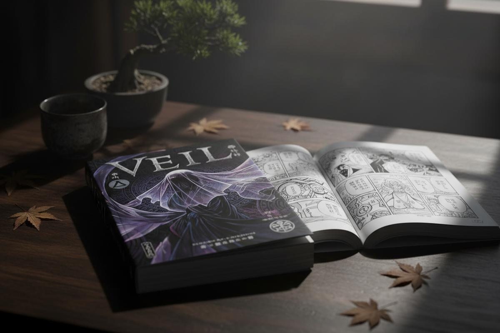

HISTÓRIAS QUE MERECEM UMA SEGUNDA LEITURA
Uma boa história
nunca termina.
Encontre mangás e histórias em quadrinhos
esperando por um novo leitor.

Mais que uma loja,
um lugar para histórias.
O Entre Páginas conecta leitores a mangás e histórias em quadrinhos de segunda mão. Porque toda boa história merece ser compartilhada.